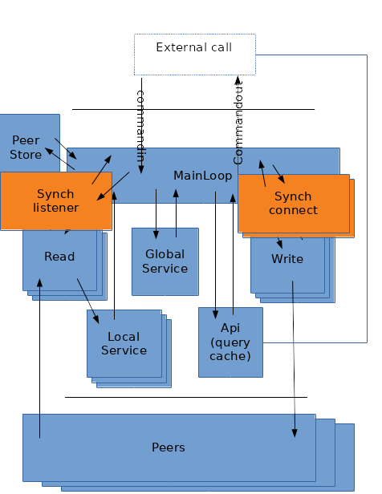

POSTS
Allowing both blocking and non-blocking transport
initial non blocking implementation
In previous posts, MyDHT was redesign to include a main event loop (using mio) and manage non-blocking transport implementation from a central mainloop process.
Those non blocking transports behave similarily as non-blocking Tcp scocket by returning an error (“would block”) when not ready for operation. The mainloop polled registered event for those operations : connection incomming, read and write stream availability. Once polled operation are restored : for connection state is changed, for read and write streams service associated with those operation is unyield (the service was suspend on ‘would block’ error).
In the mainloop a slab is used to manage all open stream with their states and pending messages.
Service wise, connection being asynch are called directly from the mainloop, and read/write stream listen/write from a suspendable service (suspend on WouldBlock is done through ReadYield and WriteYield stream composition (see previous blog)).
Service abstraction means that it can be (depending on mydht conf inner traits) from a suspendable thread, or from a coroutine, or from a local statefull function call (in fact for read and write it use the statefull case eg in previous post), other service strategy could be think of but not yet implemented.
So using non blocking transport approach all is fine. Yet I got this nice (not so nice in fact) test transport implementation from when mydht ran with blocking transport and all my old testcase with it are broken. Also, what if I want to fast design a transport or use a transport that do not implement non blocking primitive.
It might be nice to still allow blocking transport usage (connection and stream not registered on the mainloop event poll and primitives not returning ‘wouldblock’).
first idea
Easy, just implement a composition transport (adapter) containing the blocking transport and changing it to non blocking one (the inverse of what I did in previous mydht implementation for using a mio tcp stream in blocking transport implementation); just run every stream in their own thread and after operation end trigger a registration to mio loop mainloop so that mydht know it can read from the share buffer.
Wait, it means that I need to thread (I can use service internally) over reader and connection listener from this generic transport implementation. I would need to share their read result with the read service in other threads (shared mem or message), transmit asynch mydht connection to this transport and register on connect (plus send synch stream to composing stream).
Doable, yet duplicating read service felt wrong (read service from adapter and read service linked to mio loop), especially since the transport one must run in a internal thread and the loop one may also require a thread (if local service is heavy or if deserializing is seen as costy eg if writing attachment in a file).
Finally we should simply make transport abstraction compatible with both paradigm, let mydht be able to run with both.
New transport traits
Transport
pub trait Transport : Send + Sync + 'static + Registerable {
type ReadStream : ReadTransportStream;
type WriteStream : WriteTransportStream;
type Address : Address;
fn accept(&self) -> Result<(Self::ReadStream, Option<Self::WriteStream>)>;
fn connectwith(&self, &Self::Address) -> IoResult<(Self::WriteStream, Option<Self::ReadStream>)>;
fn disconnect(&self, &Self::Address) -> IoResult<bool> { Ok(false) }
}
Transport is managing readwrite stream, being both a connection listener (fn accept) and a the way to connect to (fn connectwith).
Disconnect method is currently unused and should be remove (remnant of old design where transport was able to spawn read service).
Synch constraint is also a remnant and is useless in mainloop approach, yet with next Synch transport thread it is still needed : for synch transport I think we should run a mutex adapter for it (we already did it with an Arc in this case).
Send constraint could be remove and switch to a service spawner SRef or Send constraint.
The ‘accept’ and ‘connectwith’ returns a single stream or both read and write stream, it depends on transport implementation : for instance with tcp we generally will use the same socket and both will be return, for other context we may have unidirectional handle (for instance a transport using a route that change with every calls in an non authenticated mydht).
Registration
pub trait Registerable {
fn register(&self, &Poll, Token, Ready, PollOpt) -> Result<bool>;
fn reregister(&self, &Poll, Token, Ready, PollOpt) -> Result<bool>;
}
This trait allows registration on mio loop (basically same as mio register), the interesting point is that it is not mandatory : it returns ‘Ok(false)’ if we did not register meaning that synch/blocking code need to be use.
If nonblocking, Registration on previous ‘Transport’ trait is for listening on connection (accept) and sending event when connection operation ends (connectwith).
Streams
Stream traits are not really asynch they simply (cf tcp c primitive) return a ‘WouldBlock’ error when unavailable.
pub trait ReadTransportStream : Send + Read + 'static + Registerable {
fn disconnect(&mut self) -> Result<()>;
pub trait WriteTransportStream : Send + Write + 'static + Registerable {
fn disconnect(&mut self) -> Result<()>;
Noticeable point is the Registerable constraint (optional mio registration) and Read/Write ones. Other than that it is same as blocking io (Read and Write trait are standard rust trait), so a blocking implementation simply need to never return ‘wouldblock’ error and return false when registering.
Blocking transport changes
Using previous post schema, we need to add a few threads (we use service abstraction but with blocking IO many service required to run in separate threads) :

New threads are used to manage connections. Those are synching with mainloop with message (service message) not by registering on loop (message receiver is in fact registered (single registration)).
Connection listener
When running mydht with test case, nothing goes well : connection between peers simply never occured because mainloop never listen for connection. Transport not being registered, ‘accept’ method is never called (it is normally called when event is polled by mainloop).
So we create a ‘SynchConnectService’ that launch if registration of transport returns false (in ‘init_state’ of MyDHTConf).
There is no need to disable this service when running with non blocking transport (it never spawn), but ‘NoSpawn’ can be use as its spawner to be sure.
The service implementation is really straight forward :
impl<T : Transport> Service for SynchConnListener<T> {
type CommandIn = SynchConnListenerCommandIn;
type CommandOut = SynchConnListenerCommandOut<T>;
fn call<S : SpawnerYield>(&mut self, _req: Self::CommandIn, _async_yield : &mut S) -> Result<Self::CommandOut> {
match self.0.accept() {
Ok((rs,ows)) => {
return Ok(SynchConnListenerCommandOut::Connected(rs,ows));
},
// ignore error
Err(e) => error!("Transport accept error : {}",e),
}
Ok(SynchConnListenerCommandOut::Skip)
}
}
Resulting connection is sent back to MainLoop through standard mainloop command (channel reception being registered on loop).
impl<MC : MyDHTConf> SpawnSend<SynchConnListenerCommandOut<MC::Transport>> for SynchConnListenerCommandDest<MC> {
const CAN_SEND : bool = true;
fn send(&mut self, r : SynchConnListenerCommandOut<MC::Transport>) -> Result<()> {
match r {
SynchConnListenerCommandOut::Connected(rs,ows) => {
self.0.send(MainLoopCommand::ConnectedR(rs,ows))?;
},
SynchConnListenerCommandOut::Skip => (),
};
Ok(())
}
}
The new ‘MainLoopCommand::ConnectedR’ message is returning similar info as with non blocing ‘accept’ method call from mainloop and used as such.
As with ReadService for blocking transport, this service required to run on a separate thread from MainLoop thread, because it will block without yielding/suspending.
Connecting with other peer
Connection listener was not enough : ‘connectwith’ method from transport is now taking time and would block up to possible timeout when there is no peer at the other side. So ‘connectwith’ must run in another service (if nonblocking it is done in mainloop) : for that we run a pseudo-pool of service (on paper pooling should be done in the service spawner implementation but this is a cheap compromise) to connect.
Similarily to connection listener, we use a message to send back connection to MainLoop.
The service is as straight forward as for the listener.
impl<T : Transport> Service for SynchConnect<T> {
type CommandIn = SynchConnectCommandIn<T>;
type CommandOut = SynchConnectCommandOut<T>;
fn call<S : SpawnerYield>(&mut self, req: Self::CommandIn, _async_yield : &mut S) -> Result<Self::CommandOut> {
let SynchConnectCommandIn(slab_ix,add) = req;
Ok(match self.0.connectwith(&add) {
Ok((ws,ors)) => SynchConnectCommandOut::Connected(slab_ix,ws,ors),
Err(e) => {
debug!("Could not connect: {}",e);
SynchConnectCommandOut::Failure(slab_ix)
},
})
}
}
On failure a error message is send : this lets the mainloop get rid of initial slab cache (a variant (no write stream) of standard unconnected slab cache state which bufferised message until connection is used) :
pub enum SlabEntryState<T : Transport, RR, WR, WB,P>
{
...
WriteStream(T::WriteStream,WB),
WriteConnectSynch(WB),
...
}
So when connecting with another peer, we check if the transport was asynch. If it is we initialize cache and spawn or use one of the connection service. That is the same as with non blocking transport without the connection and stream being stored in slab cache.
Mainloop on reception of the new ‘MainLoopCommand::ConnectedW’ do a similar job as when transport Write become ready for the first time (switch slab state and spawn write service) with some significant variations for optional associated read stream.
Read and Write Stream
For read and write stream usage a blocking transport is easier as we simply need not to yield (WouldBlock error is never returned) which is fine.
So running it with current implementation only involves some dead code (service suspend on wouldblock and resume on event triggering), and the need for a conditional registration (which is ok with Registrable trait).
It also means that we put our read/write service handle in slabcache. That is useless because we also use a peer cache in mainloop (peer in peer cache have reference for slabcache and handle in slabcache have reference of peer). The slab cache is related with token registration of non blocking transport. For blocking non registrable transport, the peer cache could simply containins both peer and read/write service handle (similar to previous mydht design), this is not the case and will not (maintanability), so the slabcache is use even if useless.
A trait marker could be use to mark a transport stream as non blocking, then having spawner reference the transport and a trait constraint for it (similar to what we have with ‘ServiceRestartable’ marker) could be nice.
Yet there is currently no usage of transport by the spawner so I do not force this constraint and synch transport with non threaded service will block silently on reading.
There may be some cool design where we include reference to component that may yield (transport having no sense for service abstraction) in spawner abstraction, but the service abstraction seems already a bit overly complex.
Some code variation are needed when register return false on those stream : - for read, if not registered the service is started immediatly, if registered the stream is put in slab cache until first ready event and then started - for write the initial state connection in slab is set to connected and incomming write message will spawn write service (with asynch mode it is put in buffer (the service input channel) until write first ready event occurs).
Conclusion
The idea to run both kind of transport was here from the begining of mydht redesig but I totally overlooked the need for additional process to connect.
The implementation is far from ideal due to : - connect service pseudo-pool : in previous mydht implementation we connected from Write thread, here we don’t, but we can notice that in an eventual transport redesign (change ref to mutable ref for easiest homemade transport implementing) it is ok. - transport is not anymore only use by MainLoop but also by the connect pool and the connection listener thread, this makes it more difficult to change its trait (an optional synch mutex could be needed). - mainloop useless cache organisation (both slab token indexed cache and peer key indexed cache)
I still like it.